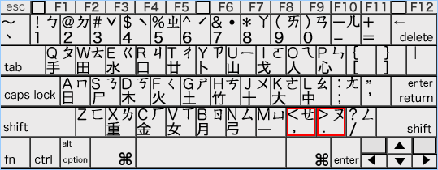

練習１
ヒントが表示されます。 ←の部分にポインタをのせるとヒントが見られます。
- あじ（鯵）［⇒ＡＪ(Ｚでも可)Ｉ］
- らくだ（駱駝）［⇒Ｒ(Ｌでも可)ＡＫＵＤＡ］
- にほんご（日本語）［⇒ＮＩＨＯＮＮＧＯ］
- ぶんしょしょり（文書処理）［⇒ＢＵＮＮＳＹＯＳＹＯＲ(Ｌでも可)Ｉ］
- せんもんがっこう（専門学校）［⇒ＳＥＮＮＭＯＮＮＧＡＫＫＯＵ］
- げんごがくがいろん（言語学概論）［⇒ＧＥＮＮＧＯＧＡＫＵＧＡＩＲＯＮＮ］
- おうようにほんごがっか（応用日本語学科）［⇒ＯＵＹＯＵＮＩＨＯＮＮＧＯＧＡＫＫＡ］
- ぶんたいろんけんきゅう（文体論研究）［⇒ＢＵＮＮＴＡＩＲ(Ｌでも可)ＯＮＮＫＥＮＮＫＹＵＵ］
- ふくおかけんきたきゅうしゅうししゅっしん（福岡県北九州市出身）［⇒Ｈ(Ｆでも可)ＵＫＵＯＫＡＫＥＮＮＫＩＴＡＫＹＵＵＳＹＵＵＳ(Ｈ)ＩＳＹＵＳＳ(Ｈ)ＩＮＮ］
- どくりつぎょうせいほうじんこくりつこくごけんきゅうじょ（独立行政法人国立国語研究所）［⇒ＤＯＫＵＲ(Ｌでも可)ＩＴ(Ｓ)ＵＧＹＯＵＳＥＩＨＯＵＪ(Ｚでも可)ＩＮＮＫＯＫＵＲＩＴ(Ｓ)ＵＫＯＫＵＧＯＫＥＮＮＫＹＵＵＪ(Ｚでも可)ＹＯ］
練習２
ヒントが表示されます。 ←の部分にポインタをのせるとヒントが見られます。
『ー（長音記号）』の入力には、［ー］キーを押します。
 入力したひらがなをカタカナに変換するには、［Space］キーを押します。
入力したひらがなをカタカナに変換するには、［Space］キーを押します。

- ミルク(milk)［⇒ＭＩＲＵＫＵ］
- カラー(color)［⇒ＫＡＲＡ−］
- スクラップ(scrap)［⇒ＳＵＫＵＲＡＰＰＵ］
- ティーチャー(teacher)［⇒ＴＥＸＩ−ＴＹＡ−］
- ヘミングウェイ(Hemingway)［⇒ＨＥＭＩＮＮＧＵＷＥＩ］
- マッキントッシュ(Macintosh)［⇒ＭＡＫＫＩＮＮＴＯＳＳＹＵ］
- ジャーナリスティック(journalistic)［⇒ＪＹＡ−ＮＡＲＩＳＵＴＥＸＩＫＫＵ］
- シェービングフォーム(Shaving Form)［⇒ＳＹＥ−ＢＩＮＮＧＵＦＯ−ＭＵ］
- シュワルツェネッガー(Schwarzenegger)［⇒ＳＹＵＷＡＲＵＴＵＸＥＮＥＧＧＡ−］
- ヒューレットアンドパッカード(Hewlett and Packard)［⇒ＨＹＵ−ＲＥＴＴＯＡＮＮＤＯＰＡＫＫＡ−ＤＯ］
練習３
ヒントが表示されます。 ←の部分にポインタをのせるとヒントが見られます。
漢字変換の方法
１．キーボードからひらがなを入力します。
【ここではきものを｜】
２．［Space］キーを押してひらがなを漢字に変換します。
【個々で｜履物を】
３．変換が正しくなければ、正しく変換されるまで［Space］キーを押します。
【ここで｜履物を】
４．文字の区切りが正しくない場合は、［Shift］キーを押しながら［←］／［→］キーを押して、正しい区切りにします（区切りをのばす場合は［→］キーです）。

【ここでは｜着物を】
５．［→］キーを押して次の区切りに進みます。

【ここでは 着物を｜】
すべての文字が正しく変換されたら［Enter］（または［return］キー）キーを押して確定します。

【ここでは着物を】
- 挨拶（あいさつ）［⇒ＡＩＳＡＴ(Ｓ)Ｕ］
- 日本語（にほんご）［⇒ＮＩＨＯＮＮＧＯ］
- 技術学院（ぎじゅつがくいん）［⇒ＧＩＪ(Ｚでも可)ＹＵＴ(Ｓ)ＵＧＡＫＵＩＮＮ］
- 特殊効果（とくしゅこうか）［⇒ＴＯＫＵＳＹＵＫＯＵＫＡ］
- 異文化交流（いぶんかこうりゅう）［⇒ＩＢＵＮＮＫＡＫＯＵＲ(Ｌでも可)ＹＵＵ］
- 片仮名語辞典（かたかなごじてん）［⇒ＫＡＴＡＮＡＫＡＧＯＪ(Ｚでも可)ＩＴＥＮＮ］
- 突発性痴呆症（とっぱつせいちほうしょう）［⇒ＴＯＰＰＡＴ(Ｓ)ＵＳＥＩＴ(ＣＨでも可)ＩＨＯＵＳＹＯＵ］
- 東京特許許可局（とうきょうとっきょきょかきょく）［⇒ＴＯＵＫＹＯＵＴＯＫＫＹＯＫＹＯＫＡＫＹＯＫＵ］
- 日本放送出版協会（にほんほうそうしゅっぱんきょうかい）［⇒ＮＩＨＯＮＮＨＯＵＳＯＵＳＹＵＰＰＡＮＮＫＹＯＵＫＡＩ］
- 後天性免疫不全症候群（こうてんせいめんえきふぜんしょうこうぐん）［⇒ＫＯＵＴＥＮＮＳＥＩＭＥＮＮＥＫＩＨＵＺＥＮＮＳＹＯＵＫＯＵＧＵＮＮ］
練習４
『、』と『。』の入力には、［，］と［．］キーを押します。
